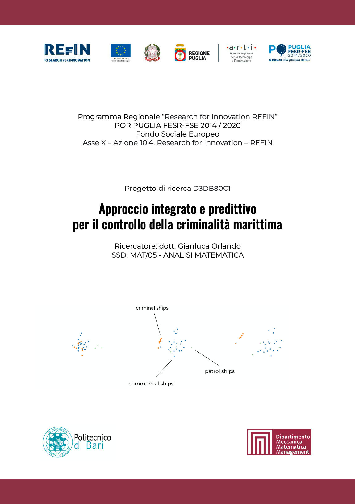

POR PUGLIA FESR-FSE 2014/2020
Fondo Sociale Europeo
approvato con Decisione C(2015)5854 del 13/08/2015
"Research for Innovation (REFIN)"
Oggetto: POR Puglia 2014/2020 – Asse X – Azione 10.4. Research for Innovation – REFIN
Università: Politecnico di Bari
Dipartimento: Meccanica, Matematica e Management
Titolo del progetto:
Codice Pratica: D3DB80C1
Settore Scientifico Disciplinare (SSD): MAT/05-ANALISI MATEMATICA
Idea Progettuale di riferimento: POLIBA014 - STRATEGIE DI CONTROLLO DELLA CRIMINALITÀ MARITTIMA
Ricercatore: Gianluca Orlando
Lo scopo finale del progetto è quello di fornire risultati predittivi nel contesto della salvaguardia delle rotte marittime da attività criminali. A tal fine si svolgerà un’analisi duplice: dal punto di vista teorico si svilupperanno e si studieranno le proprietà di modelli matematici descritti da sistemi multi-specie controllati; dal punto di vista dell’analisi numerica, si sfrutteranno le nozioni teoriche per implementare efficienti simulazioni. Nella fattispecie si analizzeranno sistemi con tre categorie di navi interagenti: navi commerciali, pirata e di pattugliamento controllabili. Tipicamente il numero dei natanti delle prime due categorie è elevato in rapporto a quello dell’ultima, rendendo necessario un approccio multi-scala al problema. Lo scopo finale del progetto sarà pertanto gradualmente raggiunto tramite i seguenti obiettivi parziali: 1) analisi di sistemi discreti di ODE con un numero finito di navi; 2) derivazione di modelli mean-field in termini di sistemi accoppiati PDE/ODE per l’approssimazione nel caso di un numero elevato di navi; 3) analisi discreto-continuo per leggi di traffico volta al perfezionamento dei modelli. Le pubblicazioni teoriche prodotte dal progetto, in sinergia con le simulazioni numeriche implementate, forniranno una comprensione approfondita del problema, idonea a fornire risultati predittivi per le applicazioni.
